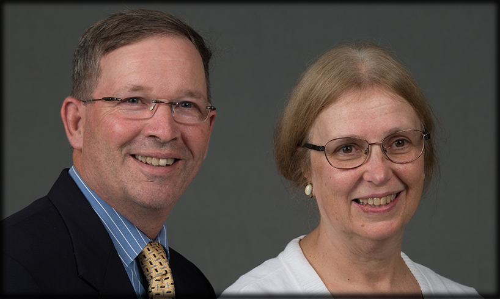
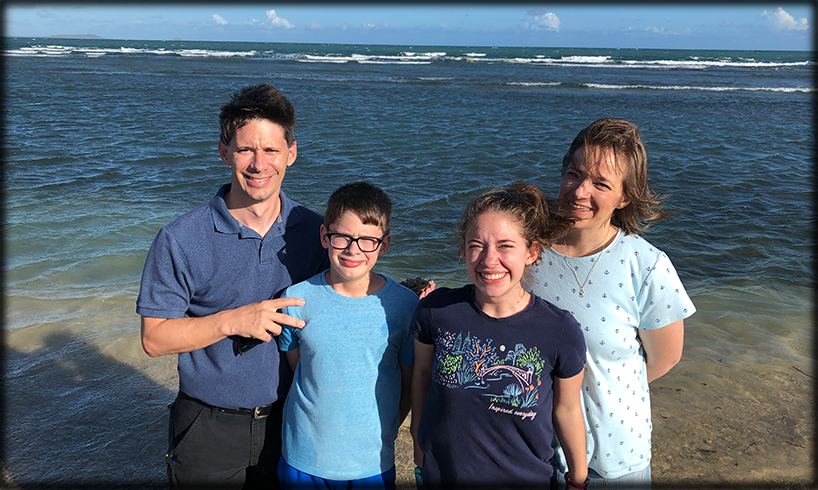
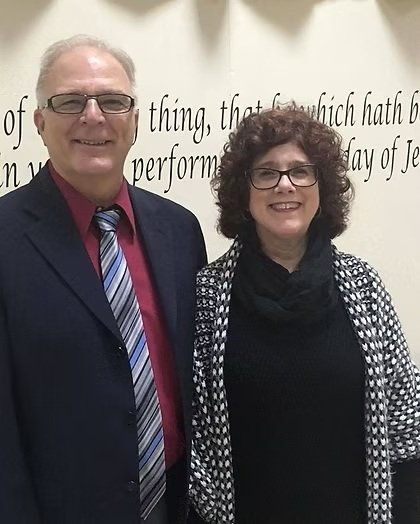
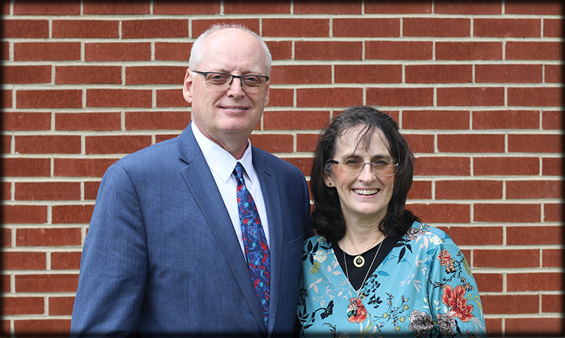
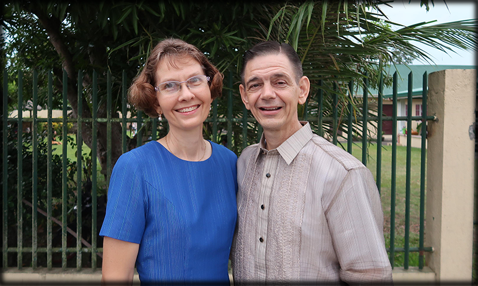

Our Missionaries

Don and Christine Dillman
We are Don and Christine Dillman, and we have been missionaries in Scotland since 1991.
Dean and Sue Zemke
We are Dean and Sue Zemke, missionaries to Japan since 1996. After three years of language training, we moved to Asahikawa, where we ministered for 22 years. In 2022, we moved to Sapporo and are working with a Japanese pastor and his wife at Sapporo Bible Baptist Church, combining efforts to grow this work to a self-supporting status. We have three adult children in the United States. Our web site is zemkedesu.com.

Jeremy and Laura Markle
In March 2009, we assumed full responsibility for Iglesia Bautista De La Fe in Juana Diaz, Puerto Rico. Although this ministry had been planted many years ago, it was not until our first term (while we were working with Jim Stinedurf) that the church had its own building in which to meet and minister. As we continue to minister in Juan Diaz with this small group of believers, we look forward to not only providing adequate facilities for the future, but also teaching each believer how to be a part of the work of the ministry (Ephesians 4:12), so that they might be a part of seeing souls saved and continue to be a true lighthouse in Juana Diaz for generations to come.

Keith and Linda Bloyd
Keith and Linda Bloyd, originally from Rock Lake Baptist Church in Wisconsin, have been devoted missionaries in Italy since 1987. Their unwavering dedication and compassionate service have profoundly impacted the local communities, fostering spiritual growth and unity. Their journey continues to inspire and uplift everyone they encounter.

Brent and Karolyn Halstead
Brent and Karolyn Halstead
We are currently assisting national church planters in establishing Kitui Baptist Church in Kitui town and Ol’Turoto Baptist Church in Kitengela. Brent is the Executive Administrator and a teacher at Independent Baptist College of Ministry in Nairobi which offers Certificate, Degree and Seminary training to national church leaders. The college enrollment is currently 35 students. We also minister in the villages of Ukambani, working with 14 village churches providing bi-monthly Bible institute training and encouragement.

Kevin and Mary Brunner
Kevin is pastoring Calvary Baptist Church of Pawili, Pili, Camarines Sur, and in the process of planting a new church in Himaao, Pili, Camarines Sur. As of January 2015, he turned over Victorious Faith Baptist Church in Caroyroyan, Pili, Camarines Sur which was planted in November 2007 to a young Filipino Bible college graduate who had grown up and served at Calvary Baptist Church in Pawili, Pili. We rejoice in the opportunity to plant churches in the Bicol Region. We continue to conduct Bible studies and train church families to serve the Lord in the local church. We spend additional time with young people who have open hearts to serve the Lord, along with other pastoral responsibilities. We both teach classes at Bicol Institute for Biblical Studies, which opened in June 2013, in order to prepare young Bicolono believers to carry on the work of the ministry, especially in the Bicol Region.
Don and Christine Dillman
We are Don and Christine Dillman, and we have been missionaries in Scotland since 1991.